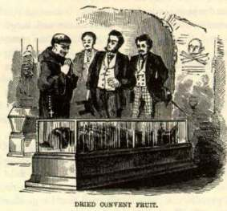

RomeIn all seriousness--without meaning to be frivolous--without meaning to be irreverent, and more than all, without meaning to be blasphemous,--I state as my simple deduction from the things I have seen and the things I have heard, that the Holy Personages rank thus in Rome: First--"The Mother of God"--otherwise the Virgin Mary. Second--The Deity. Third--Peter. Fourth--Some twelve or fifteen canonized Popes and martyrs. Fifth--Jesus Christ the Saviour--(but always as an infant in arms.) I may be wrong in this--my judgment errs often, just as is the case with other men's--but it is my judgment, be it good or bad. Just here I will mention something that seems curious to me. There are no "Christ's Churches" in Rome, and no "Churches of the Holy Ghost," that I can discover. There are some four hundred churches, but about a fourth of them seem to be named for the Madonna and St. Peter. There are so many named for Mary that they have to be distinguished by all sorts of affixes, if I understand the matter rightly. Then we have churches of St. Louis; St. Augustine; St. Agnes; St. Calixtus; St. Lorenzo in Lucina; St. Lorenzo in Damaso; St. Cecilia; St. Athanasius; St. Philip Neri; St. Catherine, St. Dominico, and a multitude of lesser saints whose names are not familiar in the world--and away down, clear out of the list of the churches, comes a couple of hospitals: one of them is named for the Saviour and the other for the Holy Ghost! Day after day and night after night we have wandered among the crumbling wonders of Rome; day after day and night after night we have fed upon the dust and decay of five-and-twenty centuries--have brooded over them by day and dreampt of them by night till sometimes we seemed moldering away ourselves, and growing defaced and cornerless, and liable at any moment to fall a prey to some antiquary and be patched in the legs, and "restored" with an unseemly nose, and labeled wrong and dated wrong, and set up in the Vatican for poets to drivel about and vandals to scribble their names on forever and forevermore. But the surest way to stop writing about Rome is to stop. I wished to write a real "guide-book" chapter on this fascinating city, but I could not do it, because I have felt all the time like a boy in a candy-shop--there was every thing to choose from, and yet no choice. I have drifted along hopelessly for a hundred pages of manuscript without knowing where to commence. I will not commence at all. Our passports have been examined. We will go to Naples. |